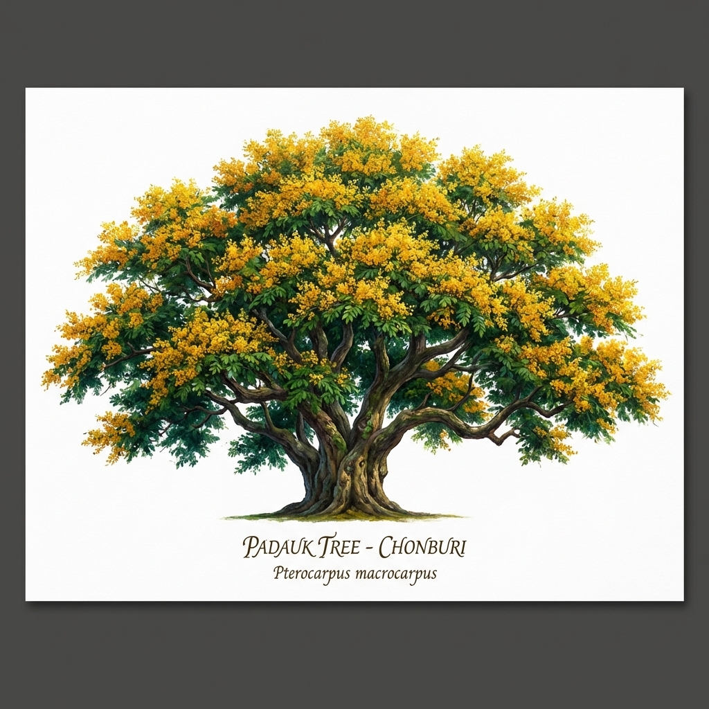

ชลบุรีเป็นเมืองเก่าแก่ มีประวัติความเป็นมายาวนานกว่า 1,000 ปี ปรากฏหลักฐานการตั้งถิ่นฐานตั้งแต่สมัยทวารวดีและขอม ต่อมาในสมัยสุโขทัยและอยุธยา ชลบุรีมีบทบาทเป็นเมืองท่าชายทะเลและแหล่งติดต่อค้าขายกับต่างประเทศ
ในสมัยกรุงรัตนโกสินทร์ตอนต้น ชลบุรีเป็นเมืองหน้าด่านสำคัญทางทะเล และเป็นแหล่งผลิตอาหารทะเลเพื่อส่งเข้าสู่กรุงเทพฯ ต่อมาเมื่อมีการพัฒนาโครงสร้างพื้นฐาน ถนน ท่าเรือ และนิคมอุตสาหกรรม ทำให้ชลบุรีเติบโตอย่างรวดเร็ว
ปัจจุบันจังหวัดชลบุรีเป็นศูนย์กลางของ เขตพัฒนาพิเศษภาคตะวันออก (EEC) มีบทบาทสำคัญด้านอุตสาหกรรม การค้าระหว่างประเทศ และการท่องเที่ยวระดับนานาชาติ เช่น พัทยา บางแสน และศรีราชา
"ทะเลงาม ข้าวหลามอร่อย อ้อยหวาน จักสานดี ประเพณีวิ่งควาย"
ความสำคัญ
ต้นประดู่ป่าเป็นสัญลักษณ์ของ ความแข็งแรง ความมั่นคง และความเจริญรุ่งเรือง
จึงถูกกำหนดให้เป็น ต้นไม้ประจำจังหวัดชลบุรี
